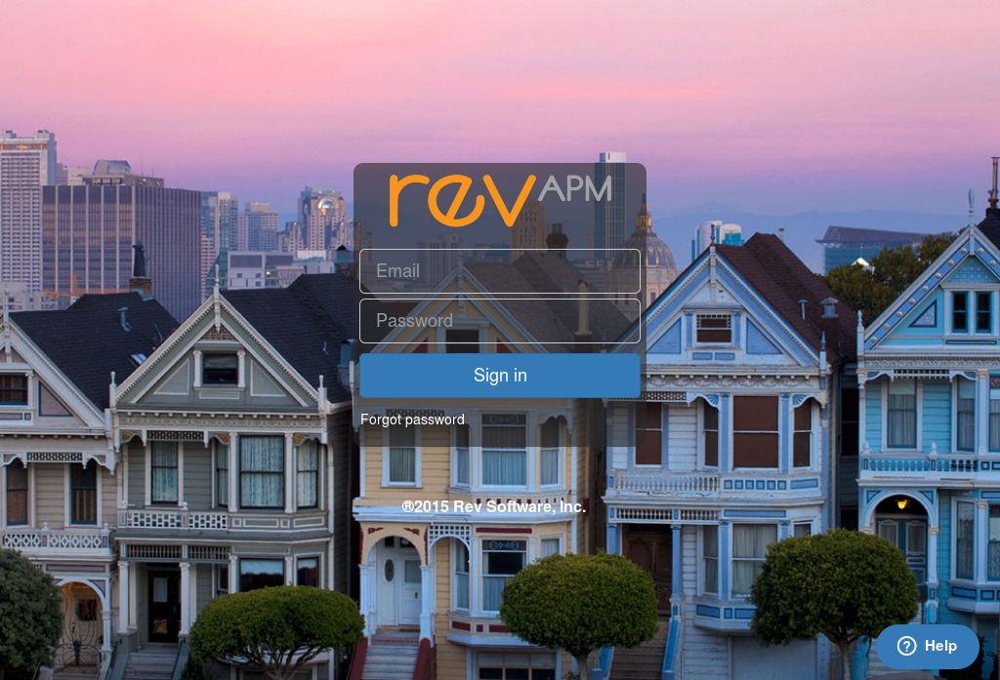
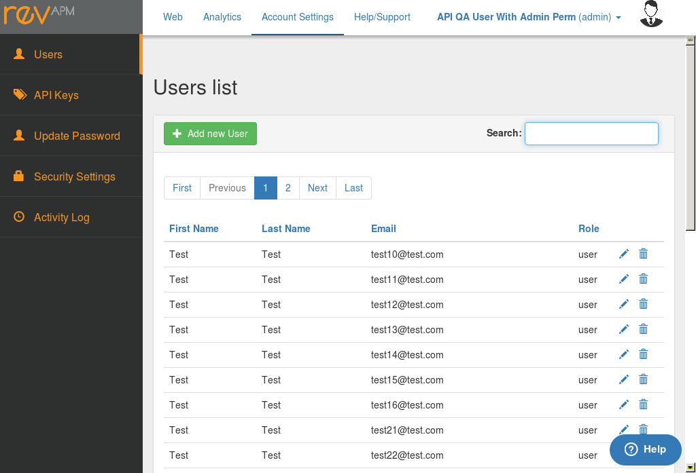
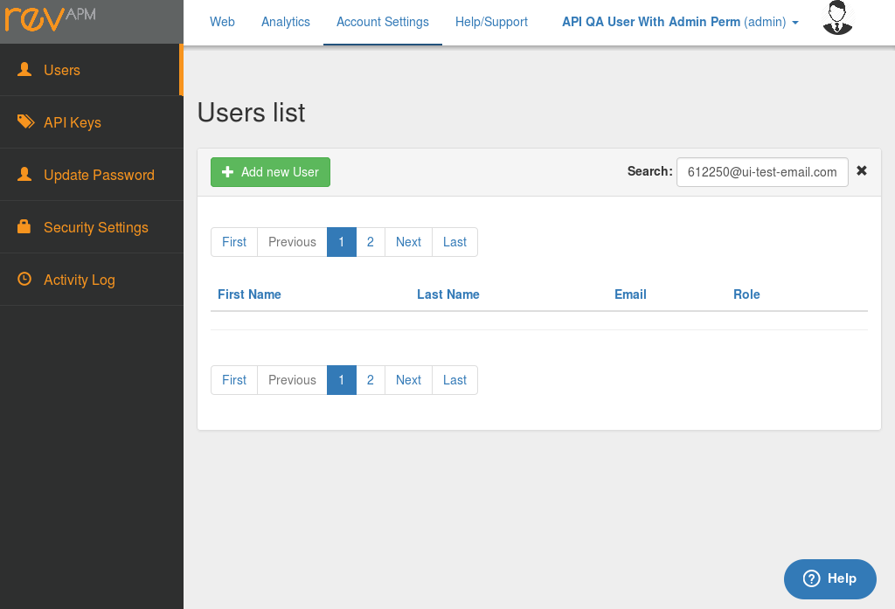

Smoke.Add user - 27.16sTests: 3Skipped: 0Failures: 0 should display "Add user" form - 3.262sPassed.✓Passed.✓Tests passed: 100.00%should allow to cancel an user edition - 5.725sPassed.✓Tests passed: 100.00%should create an user successfully when filling all required data - 13.615sPassed.✓Passed.✓Tests passed: 100.00%
Smoke.Delete user - 31.657sTests: 3Skipped: 0Failures: 0 should display delete user button - 5.494sPassed.✓Tests passed: 100.00%should allow to delete user - 12.988sPassed.✓Tests passed: 100.00%should display a confirmation message when deleting a user - 13.169sPassed.✓Tests passed: 100.00%
Smoke.Edit user - 22.708sTests: 4Skipped: 0Failures: 0 should display edit user button - 0.902sPassed.✓Tests passed: 100.00%should display "Edit User" form - 0.949sPassed.✓Tests passed: 100.00%should allow to cancel an user edition - 4.858sPassed.✓Tests passed: 100.00%should update user when filling all required data - 12.474sPassed.✓Passed.✓Passed.✓Tests passed: 100.00%
Smoke.Update user password - 33.991sTests: 2Skipped: 0Failures: 0 should display updated password form - 3.496sPassed.✓Tests passed: 100.00%should update password successfully - 26.681sPassed.✓Tests passed: 100.00%
Smoke.User list - 9.512sTests: 3Skipped: 0Failures: 0 should be displayed when clicking "Users" from sidebar - 0.793sPassed.✓Tests passed: 100.00%should be displayed when "Back to list" button is clicked from "Edit User" page - 1.956sPassed.✓Tests passed: 100.00%should be displayed when "Back to list" button is clicked from "Create User" page - 3.367sPassed.✓Tests passed: 100.00%
Smoke.User pagination - 4.736sTests: 1Skipped: 0Failures: 0 should be displayed when displaying User List page - 1.287sPassed.✓Tests passed: 100.00%
Smoke.User search - 5.612sTests: 2Skipped: 0Failures: 0 should be displayed when displaying User List page - 0.521sPassed.✓Tests passed: 100.00%should filter items according to text filled - 0.609sPassed.✓Tests passed: 100.00%
Smoke.User security settings - 7.059sTests: 1Skipped: 0Failures: 0 should display "Security Settings" by selecting option from sidebar - 3.798sPassed.✓Tests passed: 100.00%
Negative.Add user - 152.347sTests: 13Skipped: 0Failures: 1 should not create user when a required field is filled with blank space chars - 7.209sPassed.✓Tests passed: 100.00%should not create user when the filled email is already used by another user - 25.628sPassed.✓Tests passed: 100.00%should display an error message when trying to create user without email - 12.135sPassed.✓Tests passed: 100.00%should not create user when the email is not filled - 10.671sExpected 1 to equal 0.✗Tests passed: 0.00%should display an error message when trying to create user without first name - 11.355sPassed.✓Tests passed: 100.00%should not create user when the "First Name" is not filled - 11.61sPassed.✓Tests passed: 100.00%should display an error message when trying to create user without last name - 11.362sPassed.✓Tests passed: 100.00%should not create user when the "Last Name" is not filled - 11.877sPassed.✓Tests passed: 100.00%should display an error message when trying to create user without any role - 9.756sPassed.✓Tests passed: 100.00%should not create user when no "Role" is selected - 11.271sPassed.✓Tests passed: 100.00%should display an error message when trying to create user without password - 9.488sPassed.✓Tests passed: 100.00%should display an error message when trying to create user without "Confirmation Password" - 10.051sPassed.✓Tests passed: 100.00%should display an error message when creating user when "Password" and "Confirmation Password" do not match - 9.917sPassed.✓Tests passed: 100.00%
Negative.Edit user - 48.942sTests: 4Skipped: 0Failures: 0 should not allow to edit the user's email - 7.312sPassed.✓Tests passed: 100.00%should display an error message when trying to edit user without "First Name" - 7.348sPassed.✓Tests passed: 100.00%should display an error message when trying to edit user without "Last Name" - 7.264sPassed.✓Tests passed: 100.00%should display an error message when trying to edit user without "Role" - 7.66sPassed.✓Tests passed: 100.00%
Negative.Update user password - 88.179sTests: 8Skipped: 0Failures: 0 should display an error message when required fields are not filled - 4.556sPassed.✓Tests passed: 100.00%should display error message when the "current password" is invalid - 5.772sPassed.✓Tests passed: 100.00%should not update password when the "current password" is invalid - 14.34sPassed.✓Tests passed: 100.00%should display error message when the "password" and "confirm password" do not match - 4.944sPassed.✓Tests passed: 100.00%should display an error message when trying to update password with a value less than 8 chars - 6.584sPassed.✓Tests passed: 100.00%should not update password when filling a value less than 8 chars - 13.725sPassed.✓Tests passed: 100.00%should display an error message when trying to update password with a value greater than 15 chars - 5.231sPassed.✓Tests passed: 100.00%should not update password when filling a value greater than 15 chars - 13.929sPassed.✓Tests passed: 100.00%
Negative.User pagination - 10.93sTests: 4Skipped: 0Failures: 3 should not go to the next page when there is not any user to show - 2.35sExpected '1' to equal '2'.✗Tests passed: 0.00%should show only the first page button when the search criteria doesnot match with any word in the "User List" - 2.179sExpected 2 to equal 1.✗Expected 2 to be greater than 2.✗Passed.✓Tests passed: 33.33%should display the "Previous Page" disabled after filtering does not return any users in the "User List" - 1.277sPassed.✓Tests passed: 100.00%should display the "Next Page" disabled after filtering does not return any users in the "User List" - 1.077sExpected false to be truthy.✗Tests passed: 0.00%
Negative.User search - 7.255sTests: 2Skipped: 0Failures: 0 should not apply filters when typing spaces in "Search" field - 1.388sPassed.✓Tests passed: 100.00%should empty "User List" when search criteria doesn't match with any item - 1.18sPassed.✓Tests passed: 100.00%
Boundary.Add user - 52.768sTests: 5Skipped: 0Failures: 0 should not allow to create user with long email address (> 64 chars). - 10.095sPassed.✓Passed.✓Tests passed: 100.00%should not allow to create user with long First Name. - 10.5sPassed.✓Passed.✓Tests passed: 100.00%should not allow to create user with long Last Name. - 10.88sPassed.✓Passed.✓Tests passed: 100.00%should not create user when the "Password" value is not 8 characters long - 10.577sPassed.✓Passed.✓Tests passed: 100.00%should not create user when the "Password" value is greater than 15 characters long - 10.71sPassed.✓Passed.✓Tests passed: 100.00%
Boundary.Update user password - 63.103sTests: 3Skipped: 0Failures: 1 should not update the password when it is less than 8 chars length. - 21.118sPassed.✓Tests passed: 100.00%should not update the password when it is greater than 15 chars length. - 19.192sPassed.✓Tests passed: 100.00%should not update the password when filling only blank spaces - 18.455sExpected 'Your password updated' to equal 'Invalid password'.✗Tests passed: 0.00%
Negative.User search - 13.45sTests: 1Skipped: 0Failures: 0 should apply filters only when typing 1 char in "Search" field - 10.046sPassed.✓Tests passed: 100.00%
Functional.Add user - 41.876sTests: 3Skipped: 0Failures: 0 should display a successful message when creating user - 13.786sPassed.✓Tests passed: 100.00%should create a new user with "user" role - 13.545sPassed.✓Tests passed: 100.00%should create a new user with "admin" role - 14.541sPassed.✓Tests passed: 100.00%
Functional.Delete user - 72.705sTests: 5Skipped: 0Failures: 0 should delete successfully a user with "admin" role - 14.107sPassed.✓Tests passed: 100.00%should delete successfully a user with "user" role - 13.676sPassed.✓Tests passed: 100.00%should confirm user deletion when clicking "Ok" button - 13.25sPassed.✓Passed.✓Tests passed: 100.00%should cancel the deletion when clicking "Cancel" button - 15.515sPassed.✓Passed.✓Tests passed: 100.00%should cancel the deletion after pressing "ESCAPE" key - 16.148sPassed.✓Tests passed: 100.00%
Functional.Edit user.Admin-role user - 185.9sTests: 10Skipped: 0Failures: 0 should update successfully an "admin-role" user to "user-role" user - 16.988sPassed.✓Passed.✓Passed.✓Tests passed: 100.00%should update successfully an "user-role" user to "admin-role" user - 17.402sPassed.✓Passed.✓Passed.✓Tests passed: 100.00%should update successfully the "first name" of an "admin-role" user - 21.908sPassed.✓Passed.✓Passed.✓Passed.✓Tests passed: 100.00%should update successfully the "last name" of an "admin-role" user - 17.015sPassed.✓Passed.✓Passed.✓Passed.✓Tests passed: 100.00%should update successfully the "role" of an "admin-role" user - 17.51sPassed.✓Passed.✓Passed.✓Tests passed: 100.00%should update successfully the "access controls" of an "admin-role" user - 19.066sPassed.✓Passed.✓Passed.✓Tests passed: 100.00%should update successfully the "first name" of an "user-role" user - 17.575sPassed.✓Passed.✓Passed.✓Passed.✓Tests passed: 100.00%should update successfully the "last name" of an "user-role" user - 17.232sPassed.✓Passed.✓Passed.✓Passed.✓Tests passed: 100.00%should update successfully the "role" of an "user-role" user - 17.17sPassed.✓Passed.✓Passed.✓Tests passed: 100.00%should update successfully the "access controls" of an "user-role" user - 24.024sPassed.✓Passed.✓Passed.✓Tests passed: 100.00%
Functional.Update user password - 64.472sTests: 3Skipped: 0Failures: 0 should go to "User List" page when clicking "Back" button - 3.353sPassed.✓Tests passed: 100.00%should update password successfully using only letter values - 27.793sPassed.✓Tests passed: 100.00%should update password successfully using only numbers - 29.356sPassed.✓Tests passed: 100.00%
Functional.User list - 50.002sTests: 3Skipped: 0Failures: 0 should display N items maximum in the page (25 items by default) - 0.935sPassed.✓Tests passed: 100.00%should display a new user created - 11.795sPassed.✓Passed.✓Passed.✓Passed.✓Tests passed: 100.00%should list all child users created by an specific "Admin" user - 32.443sPassed.✓Passed.✓Passed.✓Passed.✓Passed.✓Passed.✓Passed.✓Passed.✓Tests passed: 100.00%
Functional.User pagination - 31.411sTests: 6Skipped: 0Failures: 0 should be displayed when the amount of items exceed the maximum amount configured to displayed in one page - 5.136sTests passed: NaN%should display the next page with next users when clicking "Next page" - 5.04sPassed.✓Tests passed: 100.00%should display the previous page with previous users when clicking "Previous page" - 6.034sPassed.✓Passed.✓Tests passed: 100.00%should display a set of user when clicking an specific page - 5.772sPassed.✓Tests passed: 100.00%should display the "Previous Page" button disabled when the first page is displayed - 4.381sPassed.✓Tests passed: 100.00%should display the "Next Page" button disabled when the last page is displayed - 5.042sPassed.✓Tests passed: 100.00% Functional - 10.09sTests: 0Skipped: 0Failures: 0 Functional.User search - 10.09sTests: 3Skipped: 0Failures: 0 should filter items according to email search criteria - 2.506sPassed.✓Passed.✓Tests passed: 100.00%should clear the search field when clicking "X" button - 2.183sPassed.✓Tests passed: 100.00%should reset the filtering when clicking "X" button - 1.701sPassed.✓Passed.✓Passed.✓Tests passed: 100.00% Workflow - 206.836sTests: 0Skipped: 0Failures: 0 Workflow.Admin role user - 206.836sTests: 9Skipped: 0Failures: 0 should be able to create other user after it was created by a reseller user - 17.707sPassed.✓Passed.✓Passed.✓Passed.✓Tests passed: 100.00%should be able to update/edit other user after it was created by a reseller user - 21.946sPassed.✓Passed.✓Passed.✓Passed.✓Tests passed: 100.00%should be able to delete other user after it was created by a reseller user - 17.106sPassed.✓Passed.✓Tests passed: 100.00%should see users created by other admin - 26.259sPassed.✓Tests passed: 100.00%should delete users created by other admin - 25.431sPassed.✓Tests passed: 100.00%should edit/update users created by other admin - 31.562sPassed.✓Passed.✓Tests passed: 100.00%should not see reseller user - 6.294sPassed.✓Tests passed: 100.00%should be able to login successfully once it was created by an reseller user - 5.185sPassed.✓Tests passed: 100.00%should be able to change his password and login again using it - 18.605sPassed.✓Tests passed: 100.00% Workflow - 28.825sTests: 0Skipped: 0Failures: 0 Workflow.Reseller role user - 28.825sTests: 2Skipped: 0Failures: 0 should display a user only for one reseller user - 11.087sPassed.✓Tests passed: 100.00%should display new created user only for the reseller who created it - 17.733sPassed.✓Passed.✓Tests passed: 100.00% Workflow - 77.175sTests: 0Skipped: 0Failures: 0 Workflow.User-role user - 77.175sTests: 3Skipped: 0Failures: 0 should be able to sign-in once it is created by a reseller user - 24.358sPassed.✓Tests passed: 100.00%should be able to sign-in once it is created by an admin user - 22.256sPassed.✓Tests passed: 100.00%should be able to sign-in after a successful password update - 30.559sPassed.✓Tests passed: 100.00%
Functional.User search - 10.09sTests: 3Skipped: 0Failures: 0 should filter items according to email search criteria - 2.506sPassed.✓Passed.✓Tests passed: 100.00%should clear the search field when clicking "X" button - 2.183sPassed.✓Tests passed: 100.00%should reset the filtering when clicking "X" button - 1.701sPassed.✓Passed.✓Passed.✓Tests passed: 100.00%
Workflow.Admin role user - 206.836sTests: 9Skipped: 0Failures: 0 should be able to create other user after it was created by a reseller user - 17.707sPassed.✓Passed.✓Passed.✓Passed.✓Tests passed: 100.00%should be able to update/edit other user after it was created by a reseller user - 21.946sPassed.✓Passed.✓Passed.✓Passed.✓Tests passed: 100.00%should be able to delete other user after it was created by a reseller user - 17.106sPassed.✓Passed.✓Tests passed: 100.00%should see users created by other admin - 26.259sPassed.✓Tests passed: 100.00%should delete users created by other admin - 25.431sPassed.✓Tests passed: 100.00%should edit/update users created by other admin - 31.562sPassed.✓Passed.✓Tests passed: 100.00%should not see reseller user - 6.294sPassed.✓Tests passed: 100.00%should be able to login successfully once it was created by an reseller user - 5.185sPassed.✓Tests passed: 100.00%should be able to change his password and login again using it - 18.605sPassed.✓Tests passed: 100.00%
Workflow.Reseller role user - 28.825sTests: 2Skipped: 0Failures: 0 should display a user only for one reseller user - 11.087sPassed.✓Tests passed: 100.00%should display new created user only for the reseller who created it - 17.733sPassed.✓Passed.✓Tests passed: 100.00%
Workflow.User-role user - 77.175sTests: 3Skipped: 0Failures: 0 should be able to sign-in once it is created by a reseller user - 24.358sPassed.✓Tests passed: 100.00%should be able to sign-in once it is created by an admin user - 22.256sPassed.✓Tests passed: 100.00%should be able to sign-in after a successful password update - 30.559sPassed.✓Tests passed: 100.00%

{kind=link}
{kind=link}
{kind=link}
{kind=link}